Onboarding redesign
New Green Chef subscribers were cancelling before they placed their first order, and many of them couldn't find their way around the account page. Working with HelloFresh's research team, I designed a short onboarding tour in two weeks. My first version used coach marks and didn't hold up in usability testing, so I switched to a carousel of four screens. After launch, our product manager reported a 13% increase in retention and a 15-point rise in NPS.
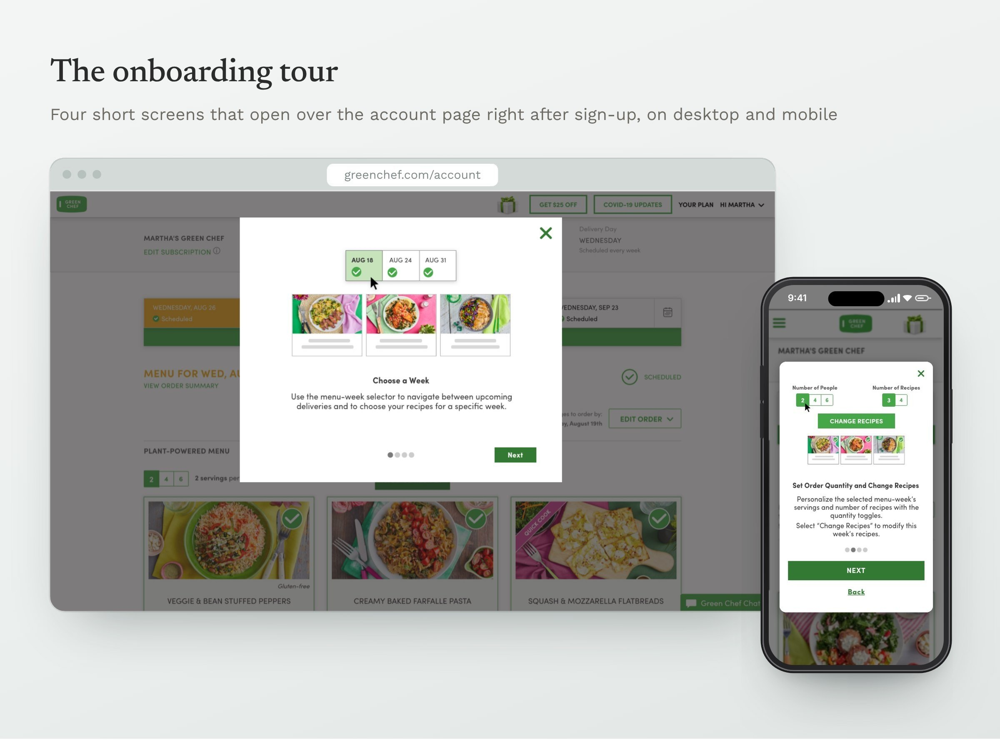
Fig 01. The onboarding tour on desktop and mobile, final design
Green Chef is a meal kit service owned by HelloFresh, built around diet-specific plans like keto, paleo and plant-powered. Subscribers handle almost everything from their account page, including weekly menus, delivery dates, skipped weeks and subscription settings.
New subscribers weren't using it well. Many didn't know how to choose meals for a given week or change an order, and the page was cluttered enough that important features were easy to miss. Some cancelled before they'd placed a first order.
A full redesign of the account page was already on the roadmap, but it was months away. The team needed something that could ship within a few weeks inside the existing interface.
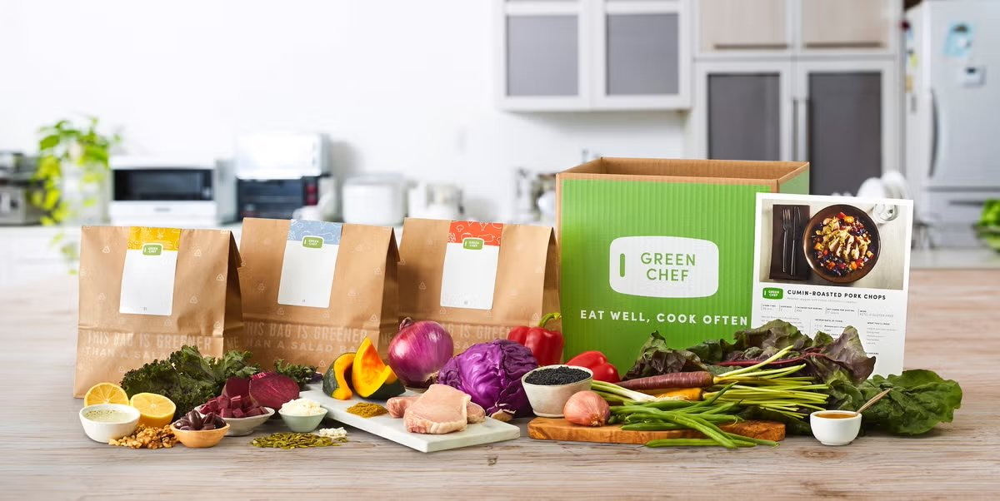
I worked with HelloFresh's research team and used two of their studies. The first was a survey of 63 brand ambassadors, HelloFresh's direct sales staff, about the questions and problems they hear from customers during sign-up.
Account management came up in 18.3% of responses, and the most common problem was forgetting to choose meals before the weekly cutoff. Customers also had trouble finding where to change their delivery date, address or payment. When ambassadors rated how well customers understood each part of the service, cutoff dates and the weekly subscription were near the bottom.
The questions they heard most were about commitment and how the subscription works, like "Is there a contract?", "Can I skip? When?" and "When can I make changes until?"
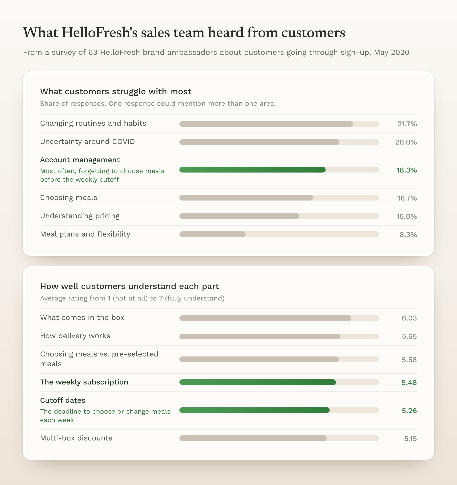
Fig 02. Two findings from HelloFresh's brand ambassador survey, May 2020
The second study asked 30 active subscribers and 10 people from the business to rank the tasks people do on the account page. I used the subscriber rankings to decide what the tour should cover first.
Ranked highest
Picking and viewing meals for this week and next took the top four spots for subscribers.
Ranked next
Skipping this week or next came right after, followed by checking a meal's ingredients and cooking time.
Ranked lower
Contacting Customer Care, pausing a plan and inviting friends were near the bottom of the list for subscribers.
Primary Persona
Everly
35 · Working Professional
Household Income
$110,000
Education
Bachelor's Degree
Cooks for Family
4× per week
"Health and nutrition are important to me and my family. Balancing my busy career and taking care of my family are my main priorities."
Fig 03. Primary persona: Everly, 35 years old, $110K household income, cooks dinner for family four times per week
Everly is busy with work and family, so I kept the tour short and the copy brief.
The research pointed to a short tour of the account features most tied to placing a first order and staying subscribed: choosing a week, picking recipes, changing an order and editing the subscription. It wasn't meant to cover the whole account page or stand in for the redesign that was coming later.
In Scope
Walk first-time subscribers through the features that decide whether they place a first order and stay subscribed. It had to work inside the existing interface, so engineering didn't have to rebuild anything.
Out of Scope
Tutorials for every feature, the full customer journey and a separate review onboarding feature were left out. Keeping the scope narrow is what made two weeks realistic.
There was a chance the tour could backfire. If it felt slow or mandatory, it could frustrate people enough to cancel before they ever got comfortable with the account page.
I started with coach marks, which are tooltip overlays that highlight parts of the interface one at a time and explain each one. They're a common way to onboard people to an existing interface without rebuilding it.
In usability testing, they didn't work here. The overlays covered the content they were explaining, and people had to keep too much in mind at once. The page was harder to use with the tutorial than without it.
I wrote up what went wrong and started on a different approach.
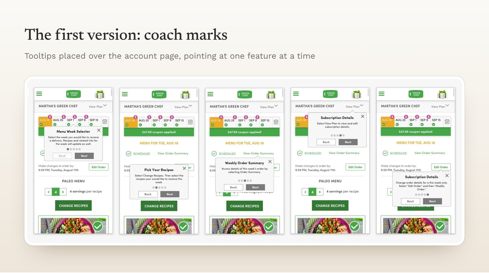
Fig 04. The first version, with coach marks over the account page
Instead of pointing at things on a busy page, the carousel explains one feature per screen in a modal, with the account page dimmed behind it. Each screen shows a small version of the part it's explaining, so people can find it again once the tour closes.
My wireframes started with six screens. The welcome screen later moved into the sign-up confirmation, and I cut the order summary to keep the tour at four steps. I also shortened the copy and took the cutoff date out of the first step, where it was confusing people.
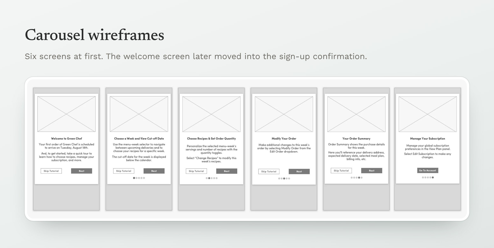
Fig 05. Carousel wireframes, before the tour was cut to four steps
The tour opens from the confirmation at the end of sign-up. Subscribers pick a meal preference, then choose Confirm & Take a Tour or go straight to their account. Since it's optional, people who already know their way around can skip it.
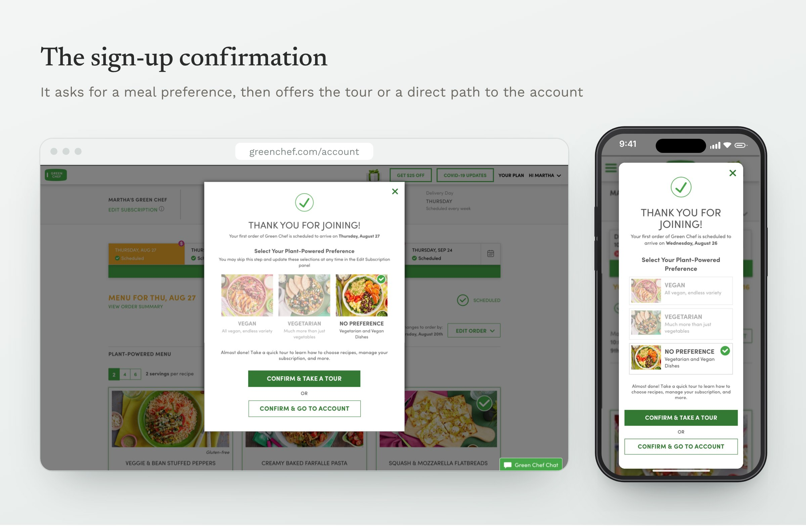
Fig 06. The sign-up confirmation, where subscribers choose the tour or their account
Step 1
Choosing a week was the first thing most people got wrong on their own. This screen shows the week selector at the top of the account page.
Step 2
The main part of placing an order: the number of people, the number of recipes and the Change Recipes button.
Step 3
How to change an order after placing it, through the Edit Order menu. People had trouble finding this when they needed it.
Step 4
Where the meal plan, delivery day and servings are listed, and the Edit Subscription link for changing them.
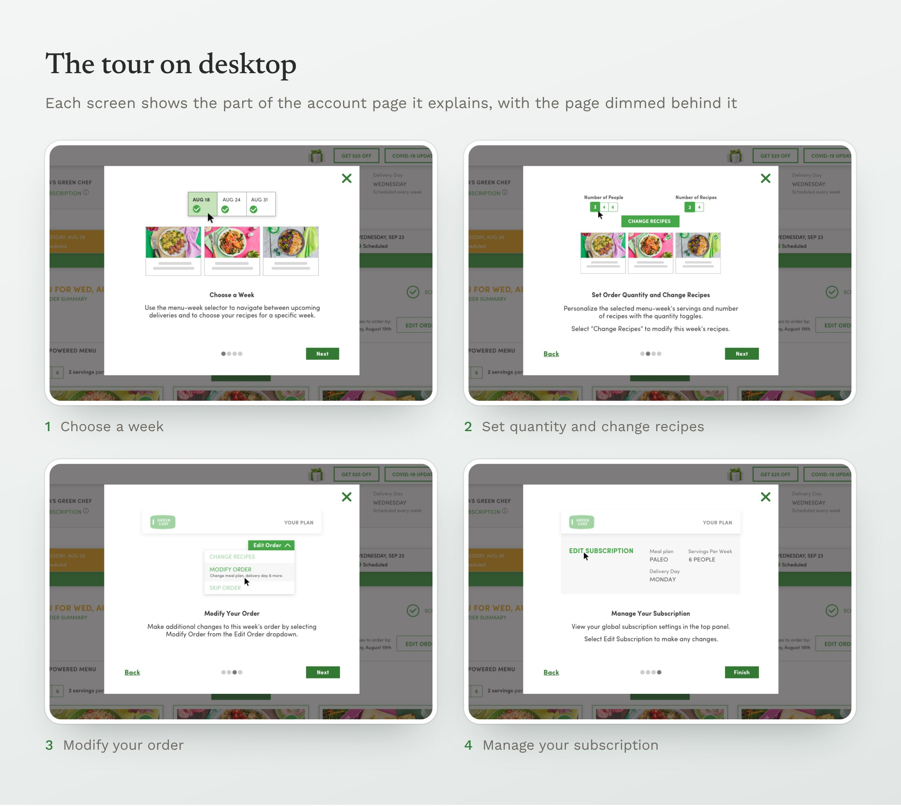
Fig 07. The four steps on desktop, final design
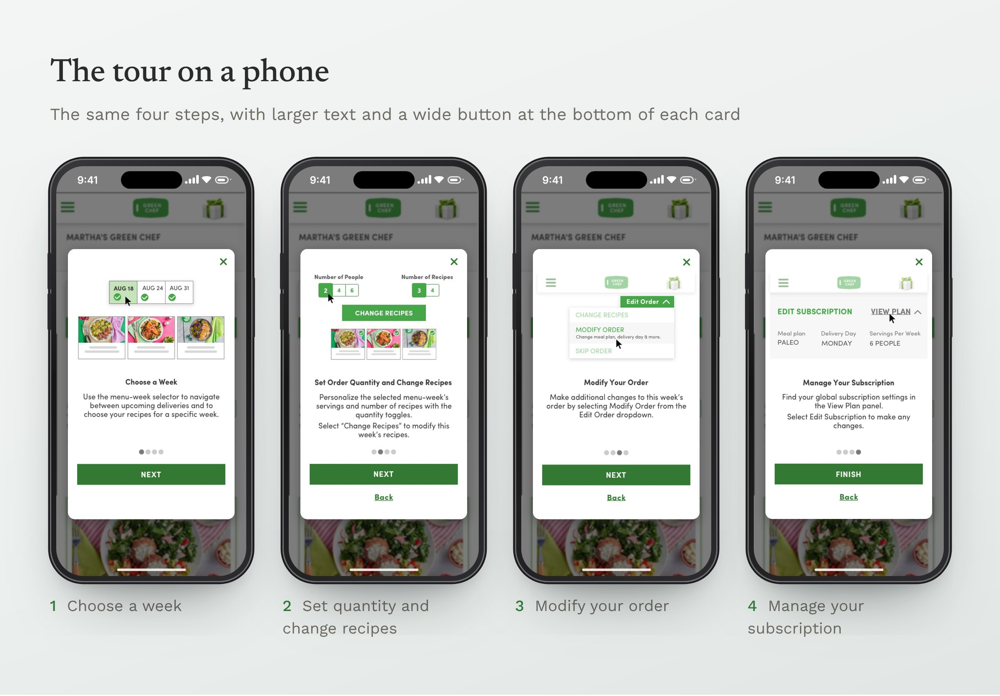
Fig 08. The four steps on a phone, final design
I handed off redlines for every screen on desktop and mobile, with spacing, font sizes and colors marked. Engineering built the tour as a layer over the existing account page, so nothing underneath had to change.
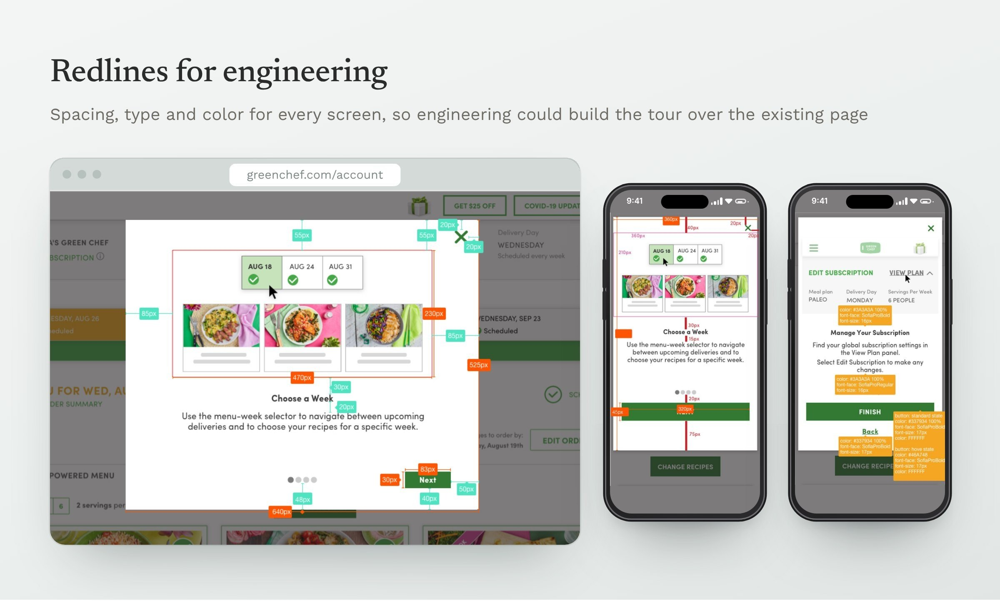
Fig 09. Redlines for the Choose a Week and Manage Your Subscription screens
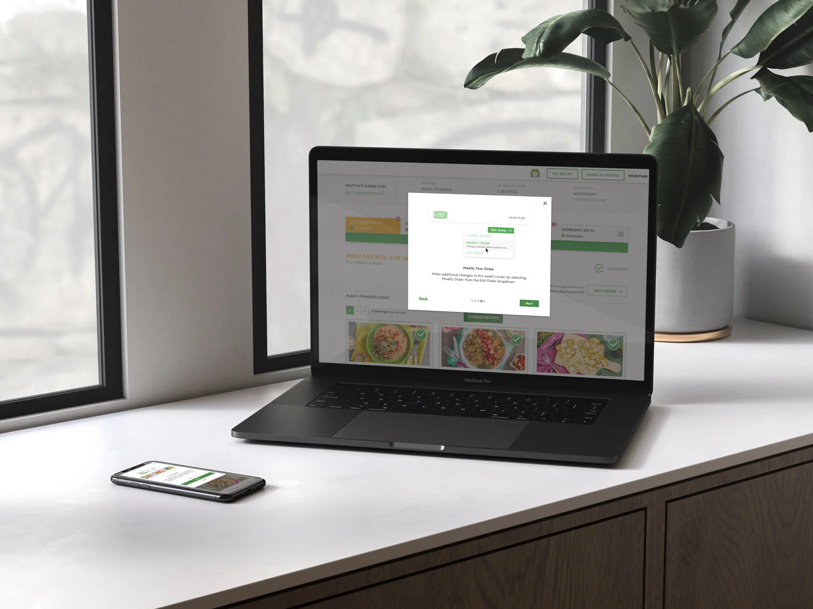
Our product manager reported these results after the tour launched. Green Chef also used the same carousel approach for later onboarding work.
I was at Green Chef from 2019 to 2020, and the onboarding tour was one of several projects there. Most of the others were about keeping subscribers too, like a cancellation flow that offers a few alternatives before the cancel button, and a reactivation page for people coming back.
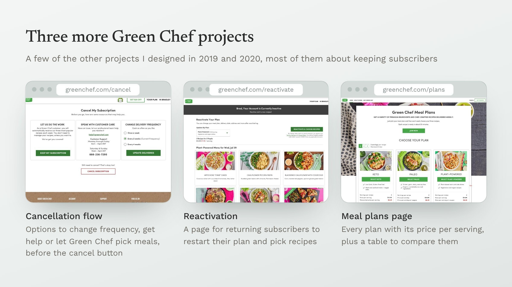
Fig 10. The cancellation flow, reactivation page and meal plans page
Coach marks seemed like the right call until testing showed otherwise. Changing direction partway through a two-week project didn't leave much room, but the first version made the problem clear. People needed one idea at a time, without the rest of the page competing for their attention.
Working with HelloFresh's research team gave me a head start. Their survey had already pointed at account management and cutoff dates, so I knew early on what the tour needed to cover.
Next time I'd test earlier. A rough prototype of both approaches in the first few days would have shown the coach marks problem before I committed to full wireframes, and left more time to refine the carousel and try a few versions of it.